Web-приложение для сотрудников пограничного контроля — помогает быстро проверять историю пересечений границы, оформлять поездки туристов и администрировать саму систему.
Спроектировать web-приложение для сотрудников пограничного контроля, которое позволяет оперативно проверять историю пересечений границы конкретным человеком или транспортным средством и выявлять несанкционированные случаи. До этого нужные данные были разбросаны по нескольким разрозненным системам, и сотрудникам приходилось сверять их вручную — это замедляло проверку и повышало риск ошибки. Нужно было собрать всю информацию в едином интерфейсе, понятном при работе в условиях ограниченного времени на принятие решения.
Прямых интервью с пользователями не проводила: данные пограничного контроля закрытые, и все вводные, кто работает с системой, какие сценарии критичны, какие есть ограничения, передавал заказчик уже в виде требований. На этой основе составила карту сценариев для двух ролей: инспектора на пункте пропуска, работающего в реальном времени, и администратора системы.
Спроектировала девять ключевых разделов, опираясь на два рабочих принципа. Первый: свести данные о конкретной поездке в одну карточку с цветовой кодировкой статусов, чтобы инспектор тратил меньше времени на поиск информации и реже ошибался при принятии решения. Второй: физически разделить сценарии инспектора и администратора, чтобы снизить риск случайных действий с чувствительными данными.
Вход в систему с выбором языка интерфейса — предусмотрела мультиязычность с самого входа, так как с системой работают сотрудники разных стран. Простая форма из логина и пароля, без лишних полей — на пункте пропуска важна скорость входа в начале смены.
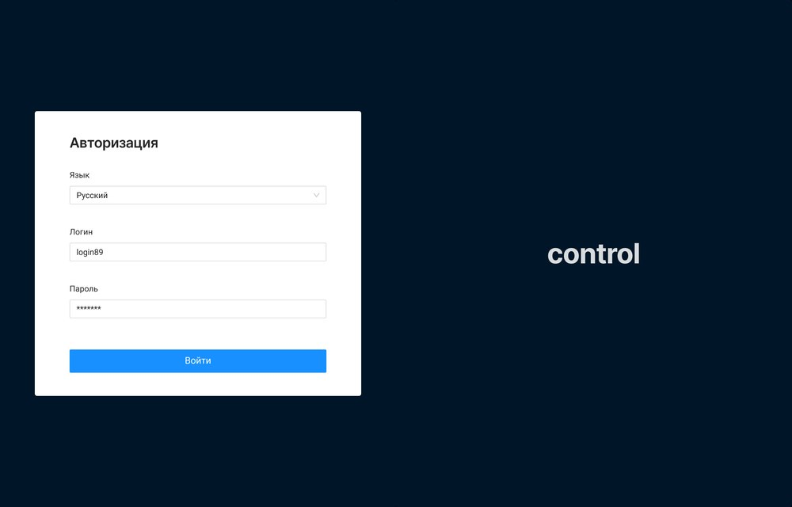
Раздел администрирования — управление пользователями и организациями системы. Список пользователей с сортировкой и фильтром, добавление нового пользователя через модальное окно с базовыми данными (ФИО, роль, контакты) и местом работы. Вынесла его отдельно от основного раздела проверки: администратор не должен случайно оказаться в рабочем сценарии инспектора с чувствительными данными о поездках.
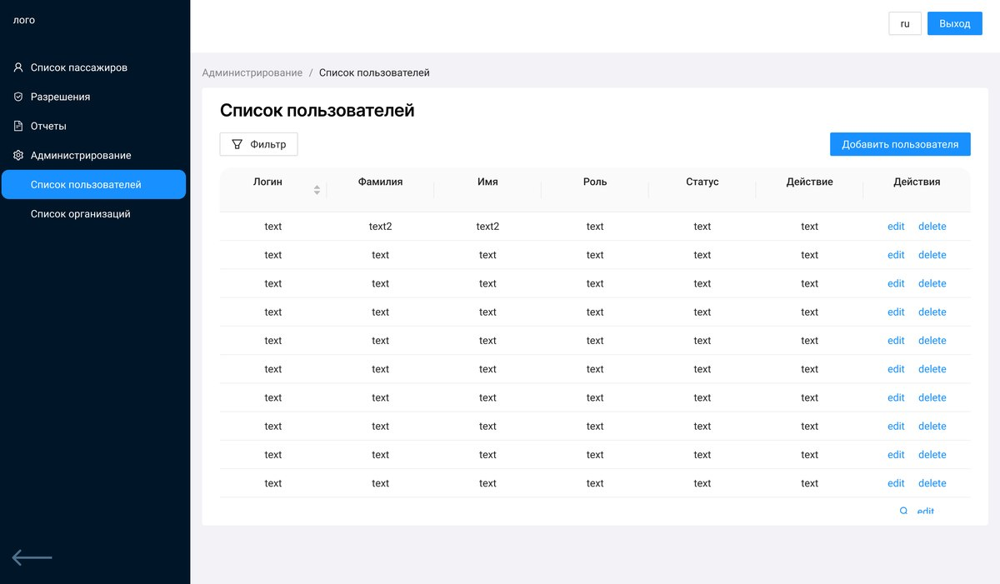
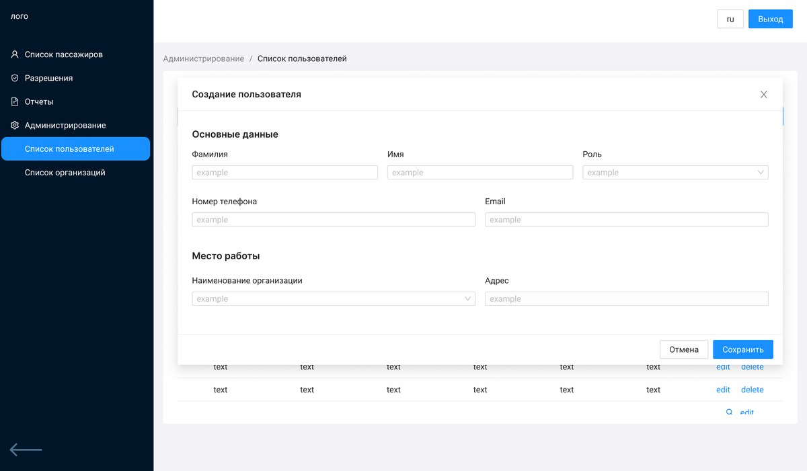
Центральный экран для инспектора — карточка конкретной поездки: фото туриста, скан документа, отпечатки пальцев, основные данные (гражданство, тип и номер документа, срок действия) и данные о поездке (цель, признак транзита, наличие визы, адрес размещения, транспорт) на одном экране. Ниже — вкладки «Разрешения», «История выезда/въезда» и «Дети», чтобы не перегружать основной экран, но держать связанную информацию рядом. Статусы разрешений — например, «Открыт» или «Приостановлен» — выделены цветом для быстрого считывания.
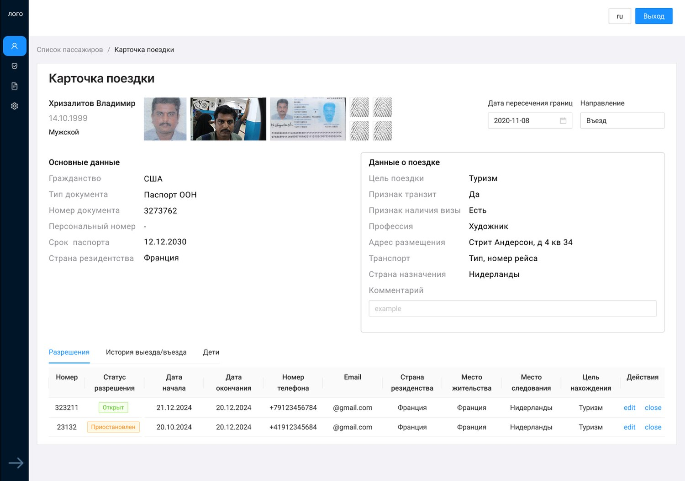
Таблица всех пересечений границы — с фото документа и лица прямо в строке, фильтром и постраничной навигацией. Интерфейс полностью переведён под каждый язык интерфейса, включая формат дат и подписи столбцов.
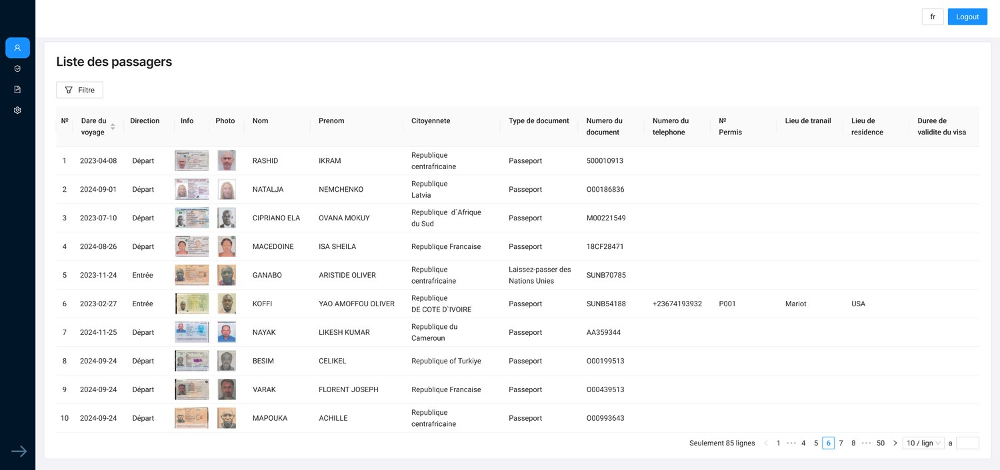
Список разрешений на пребывание с фильтром по датам и данным туриста. Активные фильтры остаются чипами над таблицей, поэтому видно, по какому срезу смотришь, и любой можно снять одним кликом. Статусы «Открыт», «Приостановлен», «Просрочен», «Закрыт» и «Погашен» различаются цветом, таблицу можно сортировать по датам и статусу.
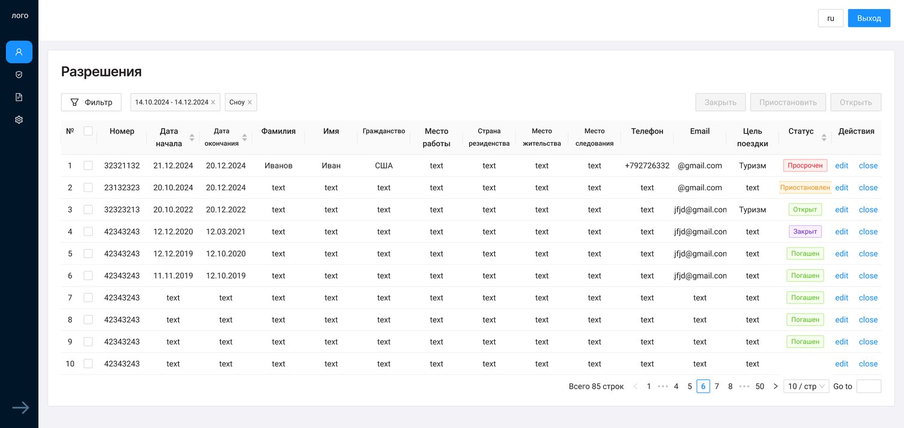
Статус можно менять сразу у нескольких разрешений. Кнопки «Закрыть», «Приостановить» и «Открыть» неактивны, пока ничего не выбрано, а внизу экрана появляется счётчик выбранных записей.
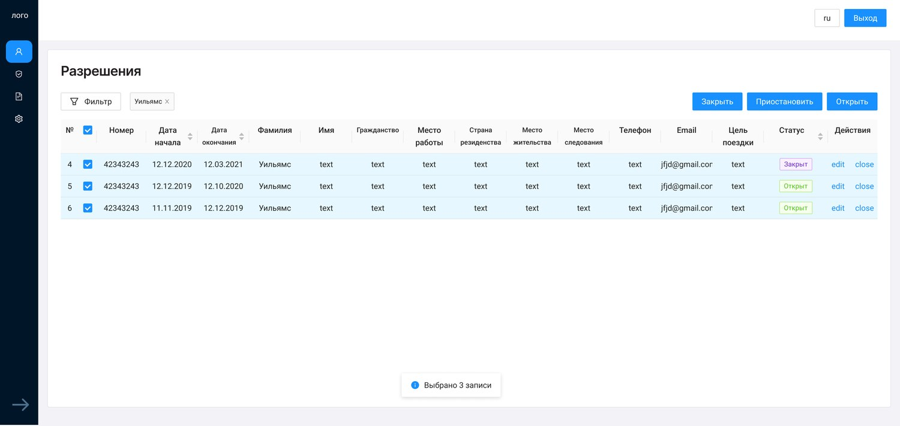
Перед сменой статуса окно подтверждения перечисляет номера выбранных разрешений и просит комментарий: массовое действие легко сделать по ошибке, а причина изменения нужна для истории. После операции система показывает, прошла ли она успешно.
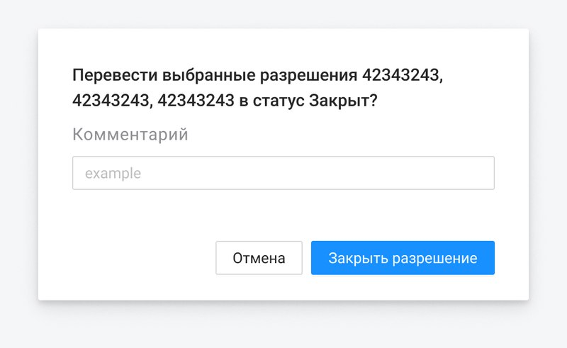
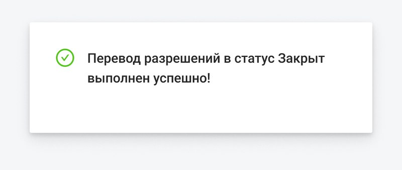
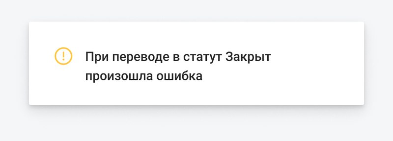
Одно разрешение редактируется в модальном окне: слева данные туриста и сроки, справа история статусов с датой, автором изменения и комментарием. Отсюда же разрешение можно распечатать или отправить на email.
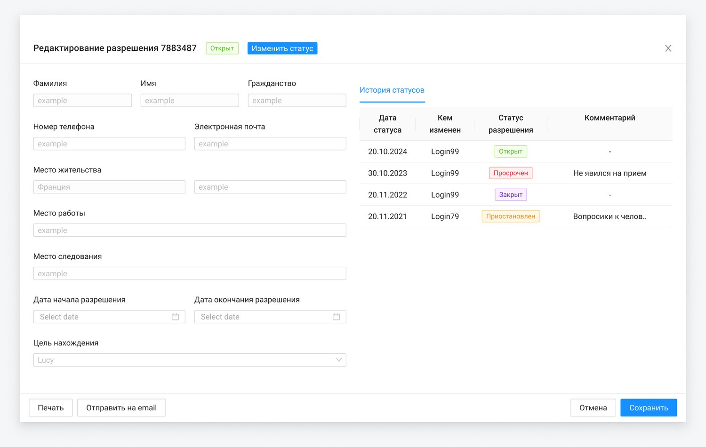
Технический раздел для администраторов — контроль синхронизации файлов между серверами системы: статус каждого файла (создан, реплицирован, скачан, ошибка обработки), с деталями ошибки и возможностью повторной обработки или замены файла. Добавила массовые действия и фильтр по статусу и серверу — при тысячах записей вручную разбирать каждую строку нереально.
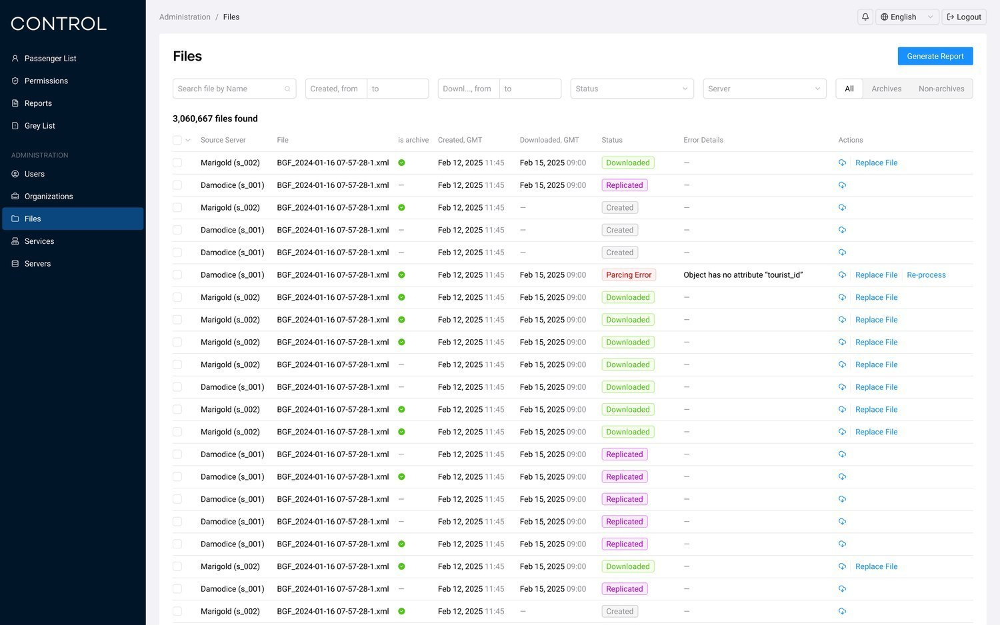
Файлы можно выбирать чекбоксами по одному или все сразу. Внизу экрана появляется плашка с количеством выбранных файлов и действием над ними, поэтому повторную загрузку не нужно запускать для каждой строки отдельно.
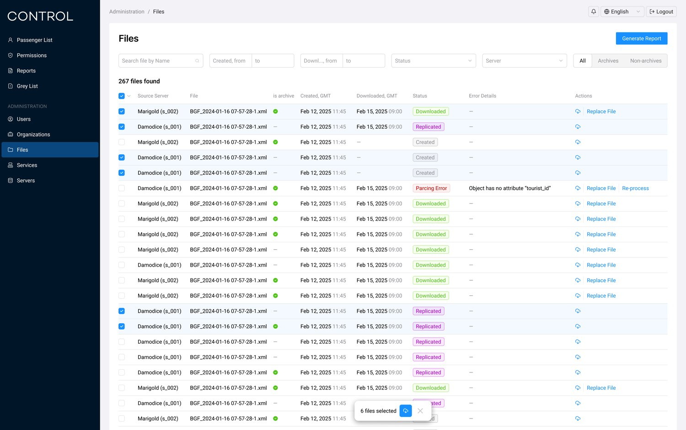
Раздел для администраторов, который появился в обновлении 2025 года: состояние фоновых процессов, которые забирают данные из внешней системы, реплицируют и обрабатывают их. Каждый процесс свёрнут в строку со сводным статусом, например «2/2 JOBs Up» или «1/4 JOBs Down», поэтому сбой виден сразу, без раскрытия всего списка. Внутри процесса задачи с расписанием и временем следующего запуска. У упавшей задачи вместо «No errors» стоит ссылка на лог, а настройки, перезапуск и остановка доступны прямо в строке.
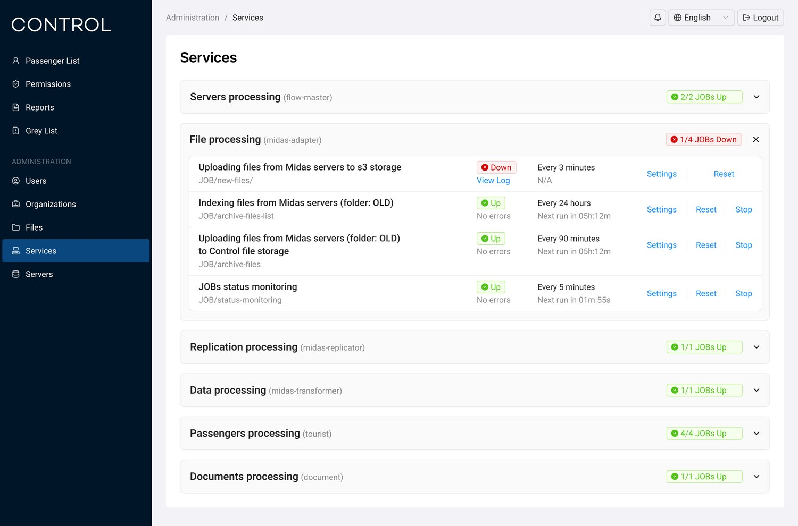
Справочники разделила на две группы. Midas приходят из внешней системы и доступны только для просмотра, Control можно редактировать. На карточке каждого справочника сразу видно количество элементов, а общая история изменений вынесена отдельно.
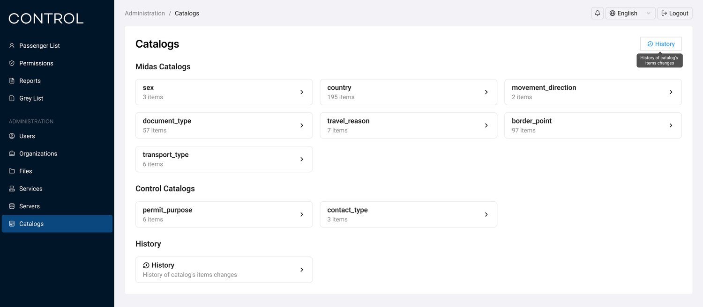
Внутри справочника таблица с описаниями на английском и французском, идентификаторами и статусом. Удалённые элементы по умолчанию скрыты и показываются отдельным чекбоксом, у каждого элемента есть своя история изменений.
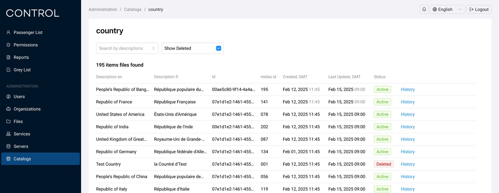
Пошаговый флоу для инспектора, когда нужно оформить новое пересечение границы: скан документа туриста с автоматическим распознаванием данных (номер, срок действия, ФИО, дата рождения) → подтверждение найденного туриста или создание нового → детали поездки (направление, цель, транзит, виза, транспорт) с поиском транспортного средства по номеру и подтягиванием данных о владельце → добавление детей, если турист путешествует с ними. На каждом шаге справа — сводка уже подтверждённых данных, чтобы инспектор не терял контекст поездки. Сроки на этот раздел были сжатыми, поэтому часть экранов дорабатывала в паре со вторым дизайнером.
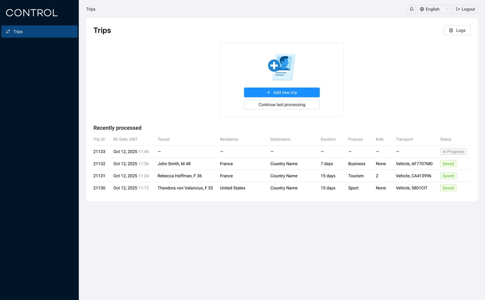
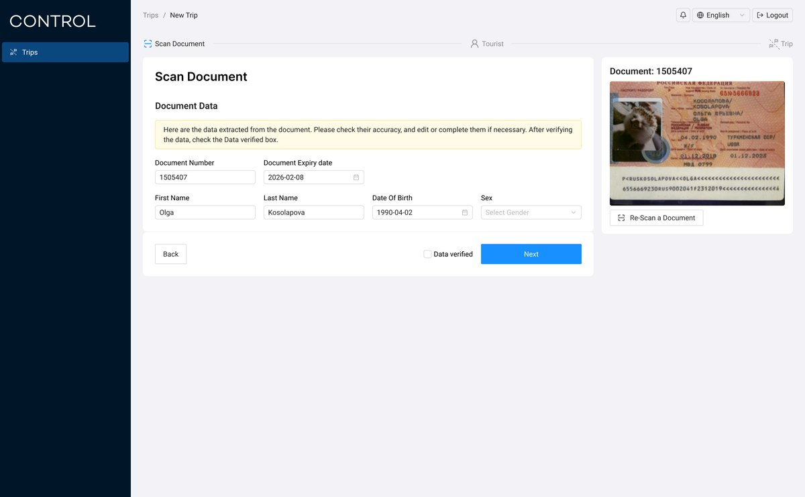
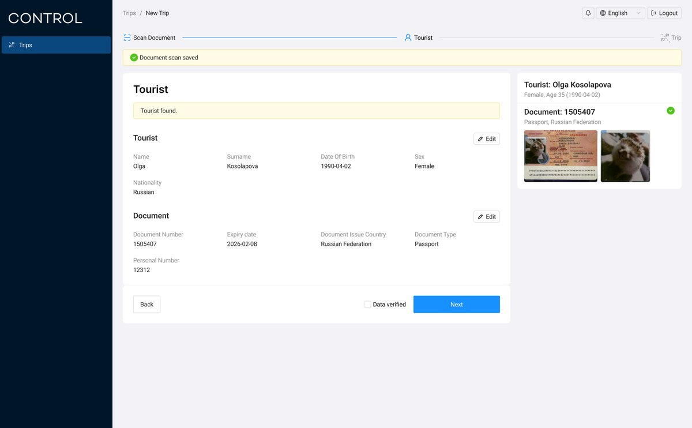
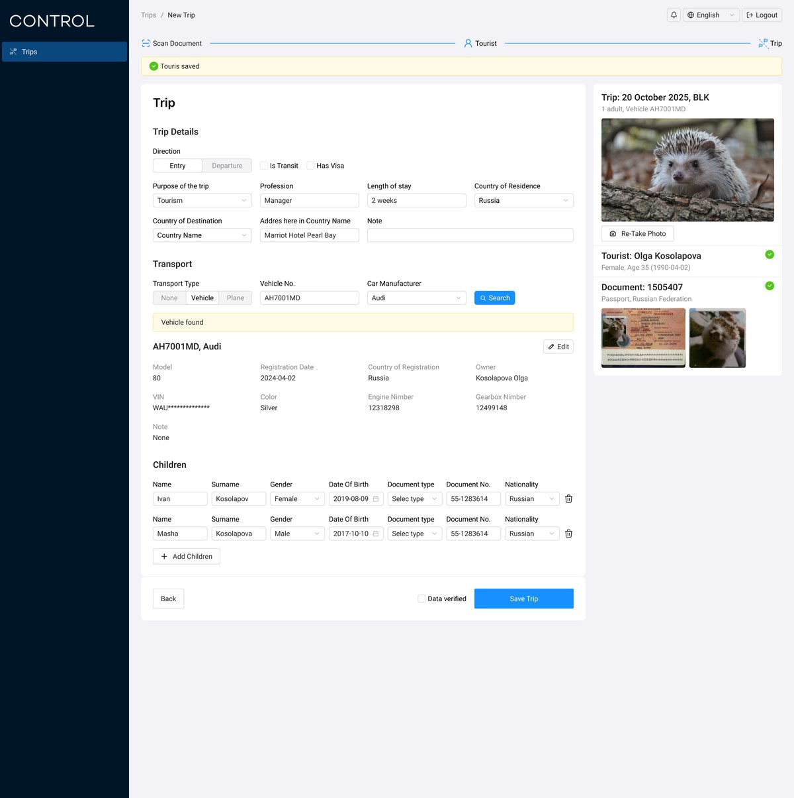
Интерфейс объединил данные, которые раньше приходилось сверять вручную по нескольким системам, в единый экран проверки — от карточки конкретной поездки до администрирования самой системы. Все экраны получили в Figma статус «Ready for dev» и в этом виде переданы в разработку: авторизация, админ-панель, карточка поездки, список пассажиров, разрешения, пошаговый флоу оформления поездки инспектором, а в обновлении 2025 года ещё файлы, сервисы и справочники.